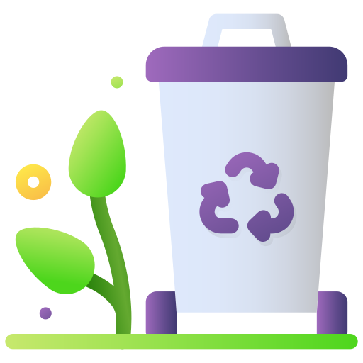

E-waste, or electronic waste, refers to discarded electrical
or electronic devices that have reached the end of their functional life. This includes a wide
range of items such as computers,
mobile phones, tablets, televisions, printers, air conditioners, refrigerators, washing
machines, and even small household appliances
like toasters and hairdryers. As technology advances at a rapid pace and consumer demand for the
latest devices grows, the amount of
e-waste generated globally has increased significantly.
According to the Global E-Waste Monitor 2020, the world generated over 53.6 million metric
tonnes (Mt) of e-waste in 2019, and this number is
projected to
exceed 74 million Mt by 2030. India,
being the third-largest generator of e-waste after China and the United States, produced
approximately 3.2 million tonnes of e-waste in 2020,
highlighting the urgent need for effective e-waste management strategies.
The Basel Convention, an international treaty signed by over 180 countries including India,
controls the transboundary movement of hazardous waste
and discourages the export of e-waste to developing nations for unsafe processing.
However, illegal trafficking of used electronics labeled as "second-hand goods" continues,
making low-income countries vulnerable to becoming dumping
grounds for the world's digital trash. Cooperation at the global level is needed
to track, regulate, and responsibly recycle e-waste, along with standardizing product labeling,
take-back schemes, and environmental certifications.
Educational institutions, NGOs, and digital manufacturers also have an important role to play.
By integrating e-waste education into school curricula,
organizing community outreach programs, and developing user-friendly collection systems,
awareness and responsible behavior can be encouraged among citizens.
Likewise, manufacturers should design products with longer lifespans, repairability, and
recyclability in mind. They should also offer easy return policies
and incentives for customers who recycle their old devices.
In conclusion, e-waste is both a serious threat and a remarkable opportunity for India and the
world.

"Why E-Waste is Crucial in India"
A. Environmental Concerns
Toxic Pollution: E-waste contains hazardous substances like lead, mercury, cadmium, and
brominated flame retardants, which contaminate soil, air, and water.
Air and Water Degradation: Burning or acid-leaching e-waste (common in informal sectors)
releases carcinogenic fumes and contaminates local water bodies.
Climate Impact: Poor disposal contributes to carbon emissions and long-term ecological
imbalance. +
B. Public Health Impact
Informal recycling hubs like Seelampur (Delhi) and Moradabad (UP) expose workers—including
children—to fatal levels of toxins.
Communities near informal recycling areas suffer from cancers, respiratory illness, birth
defects, and neurological damage due to prolonged exposure.
C. Economic Opportunity
E-waste is a “urban mine”:
1 ton of discarded mobile phones contains more gold than 1 ton of gold ore.
Promotes green jobs in repair, refurbishing, and recycling.
Boosts the circular economy, reducing reliance on imported raw materials.
People’s Perspective: Diverse Points of View
● Consumers
Often unaware of safe disposal methods.
Tend to hoard old devices or throw them in general waste.
Need awareness campaigns and access to collection points.
● Informal Sector Workers
Currently dominate the recycling space (~95%).
Lack safety training and protective gear.
Need formal inclusion, training, and regulation for safer working conditions.
● Government and Policymakers
Need to enforce E-Waste Management Rules (2016) effectively.
Must ensure Extended Producer Responsibility (EPR) is practiced by manufacturers.
Require infrastructure investment for safe recycling centers across states.
● Manufacturers and Retailers
Responsible for setting up take-back systems.
Must design products for longer life and easier recycling.
Should promote eco-friendly innovations and corporate social responsibility (CSR) in waste
management.
The Educational & Environmental Knowledge Angle
Educating youth in schools about e-waste can foster responsible digital citizenship.
Promoting courses and training on green technology and waste management can build
future-ready skills.
Community-level awareness leads to behavioral change, reducing improper disposal.
Conclusion
E-Waste in India is more than just discarded electronics—it represents a choice between
progress and pollution, between health and hazard. Managing e-waste responsibly involves
every Indian—from tech users to waste collectors, policymakers to educators. Only through
collective effort, awareness, and strong infrastructure can India turn this challenge into a
sustainable opportunity.